Kashiwa, Chiba: things to do, food and stays
Kashiwa · Chiba
Kashiwa
Highlighted on the Chiba map.
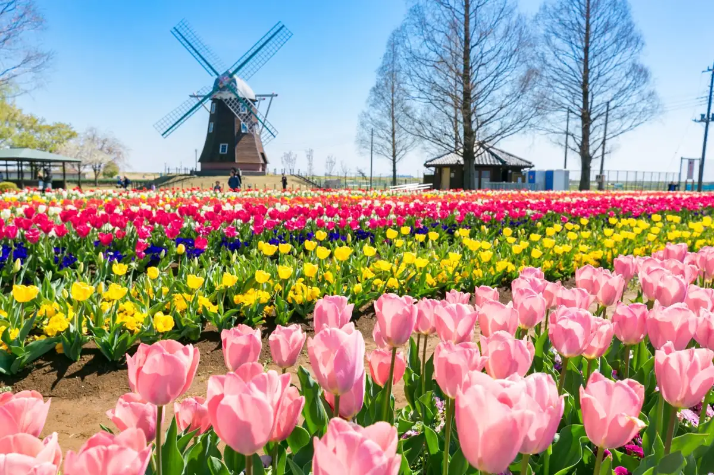
Stay
ホテル・トリフィート柏の葉
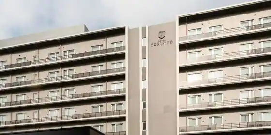
Hotel Torifito Kashiwa No Ha
Hotel in Jakushiba, Kashiwa with parking; 5-minute walk from Kashiwanohakyanpasu Station.
相鉄フレッサイン千葉柏
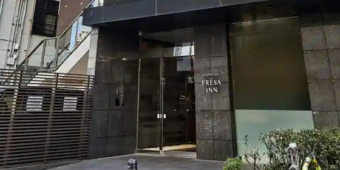
Sotetsu Furessain Chiba Kashiwa
ホテルサンオーク柏の葉
Hotel San'Oku Kashiwa No Ha
Hotel in Jakushiba, Kashiwa with parking.
三井ガーデンホテル柏の葉
Mitsui Garden Hotel Kashiwa No Ha
グランパークホテル ザ・ルクソー南柏
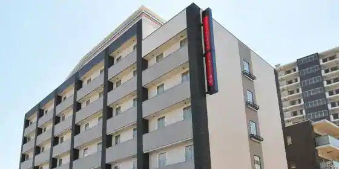
Guran Park Hotel Za Rukuso Minami Kashiwa
Hotel in Minamikashiwachuo, Kashiwa; 1-minute walk from Jrminamikashiwa Station.
ザ・クレストホテル柏
Za Kuresuto Hotel Kashiwa
Hotel in Suehiro, Kashiwa with scenic views; 2-minute walk from (Kashiwa Station.
三井ガーデンホテル柏の葉パークサイド
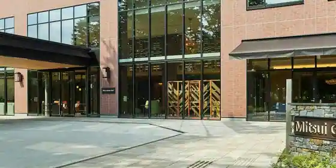
Mitsui Garden Hotel Kashiwa No Ha Park Saido
ホテルルートイン柏南-国道16号沿-
Hotel Route Inn Kashiwa Minami - Kokudo 16 Go En
Hotel in Oshimata, Kashiwa with a large communal bath; 20-minute drive from Kashiwa Station.
ReLA柏駅北
ReLA Kashiwa Eki Kita
Inn in Kashiwa with long stays.
東横ＩＮＮ柏駅西口
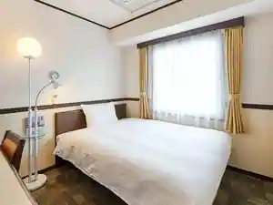
Toyoko INN Kashiwa Eki Nishiguchi
Inn in Suehiro, Kashiwa with breakfast available.
東横ＩＮＮ柏駅東口

Toyoko INN Kashiwa Eki Higashiguchi
Inn in Kashiwa with breakfast available.
柏プラザホテル Ａｎｎｅｘ
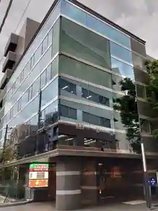
Kashiwa Plaza Hotel Annex
Dining
竹やぶ 柏本店
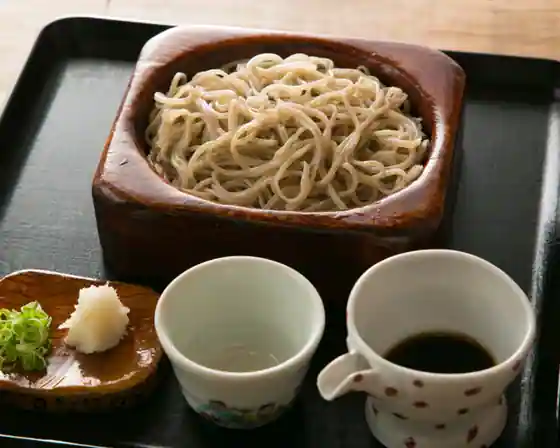
Take Yabu Kashiwa Hon
豚骨醤油ラーメン 王道家 柏店
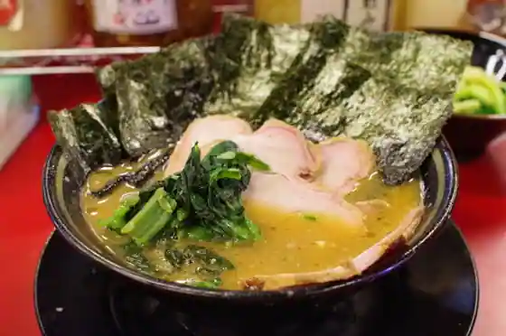
Tonkotsu Shoyu Ramen Odo Ie Kashiwa
麺処 にし尾
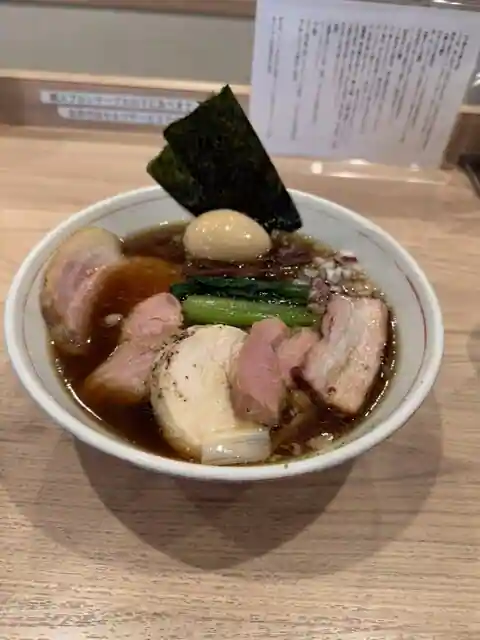
Men Tokoro Nishi O
もつ煮 太郎
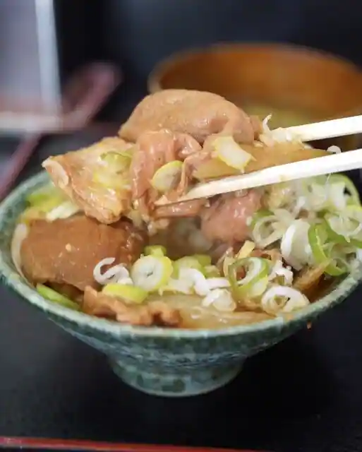
Motsu Ni Taro
中華そば榮田
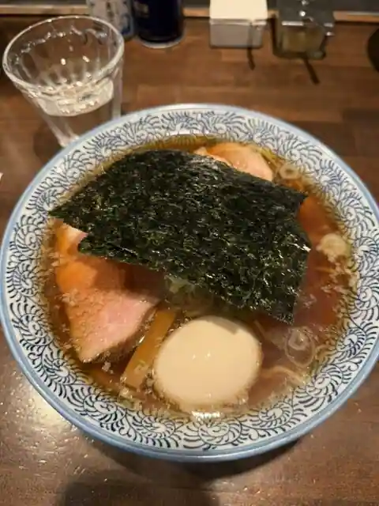
Chuka Soba Sakaeda
カレーの店 ボンベイ 本店
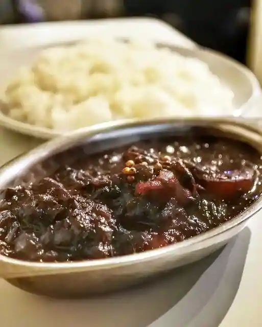
Kare No Bonbei Hon
芳野屋
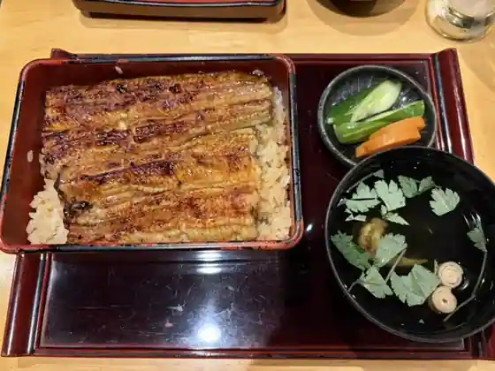
Yoshino Ya
柏 濃麺や 39名
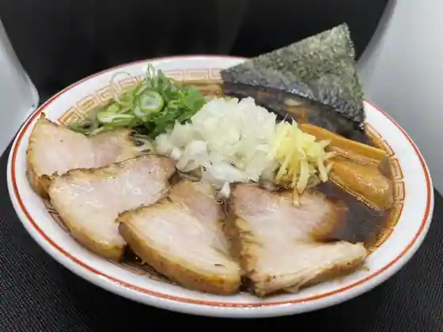
Kashiwa No Men Ya 39 Mei
ラーメン二郎 柏店
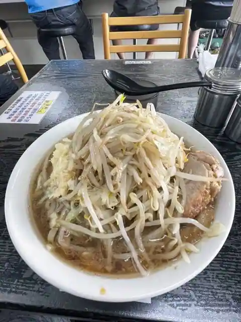
Ramen Jiro Kashiwa
66
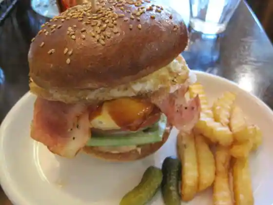
66
AKEBI
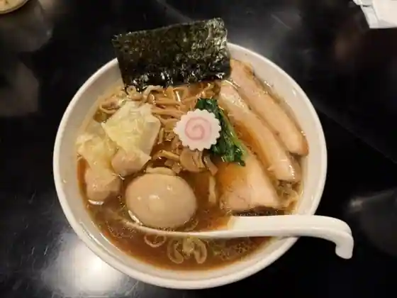
AKEBI
中華 大島
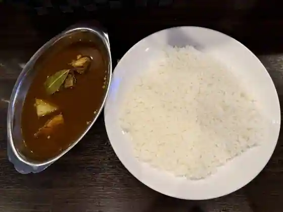
Chuka Oshima
ベーカリーフェーブ
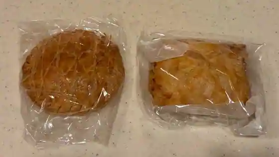
Bakery Febu
アーユーボーワン
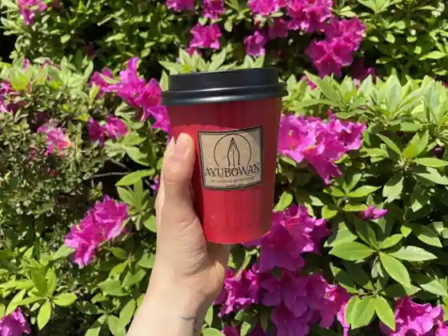
Ayubowan
文菜華
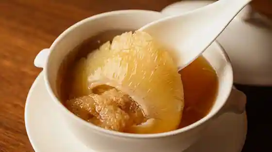
Bun Na Hana
お料理なかき
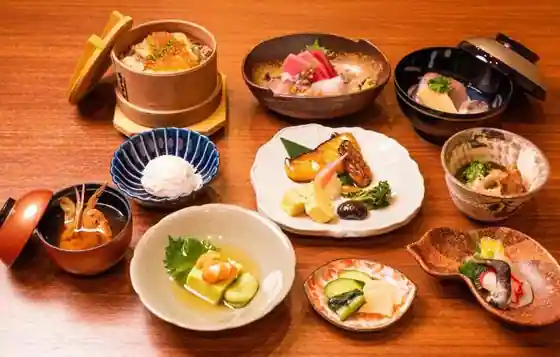
O Ryori Nakaki
とんかつ瓢
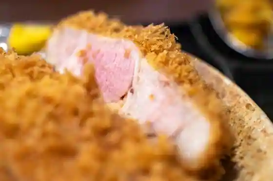
Tonkatsu Hyo
zoe's
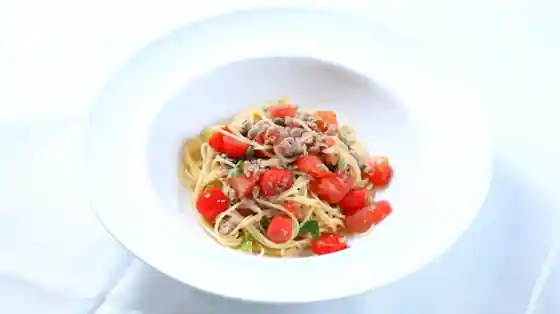
zoe's
中華蕎麦 萌芽
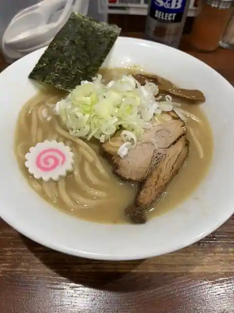
Chuka Soba Hoga
鮨 匠海
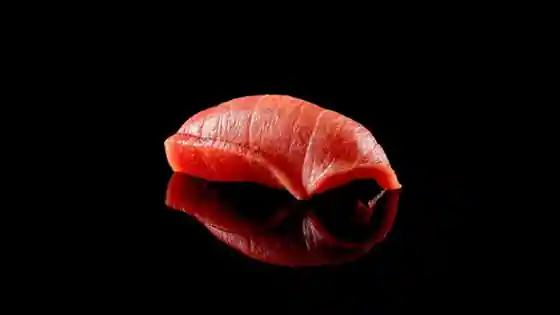
Sushi Takumi Umi
こってりらーめん誉
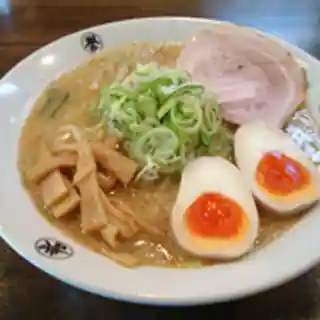
Kotteri Ramen Yo
ラーメン ししょう
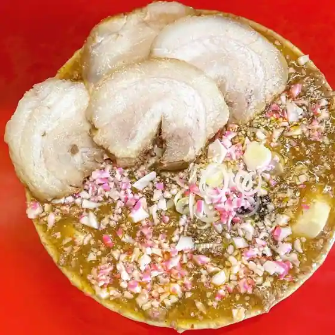
Ramen Shisho
焼鳥良房
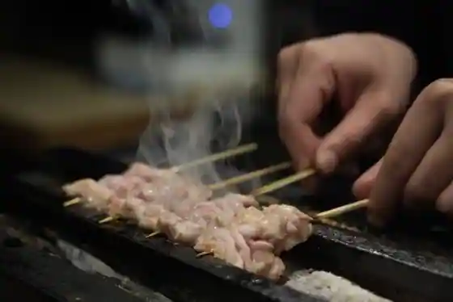
Yakitori Yoshifusa
中華料理 おぎわら
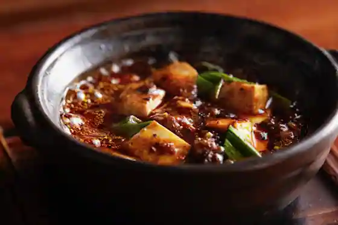
Chukaryori Ogiwara
Sights
Akebo no Yama Nogyo Park
Roadside Station
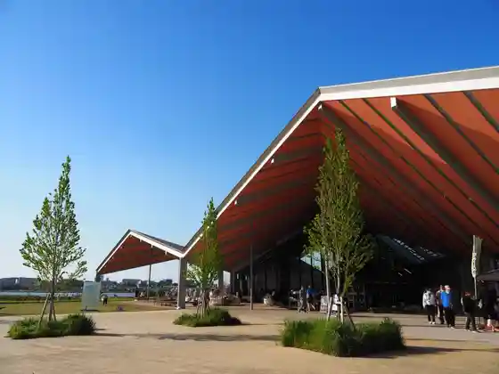
Prefectural Kashiwa no Ha Park
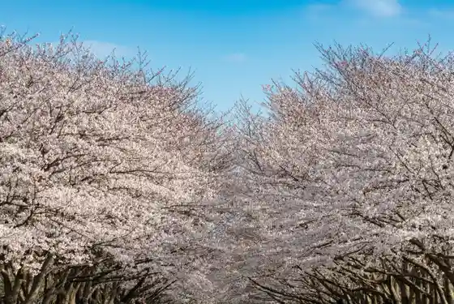
Ryuko In Masakado Shrine
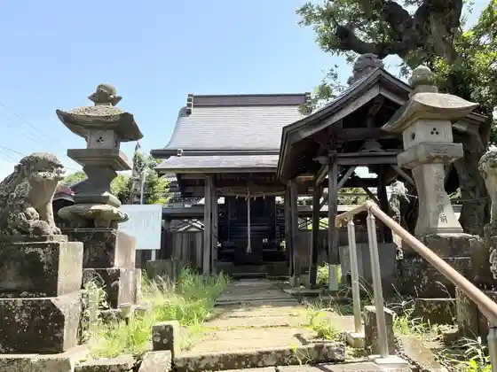
Nosambutsu Chokubai Tokoro Kashiwade
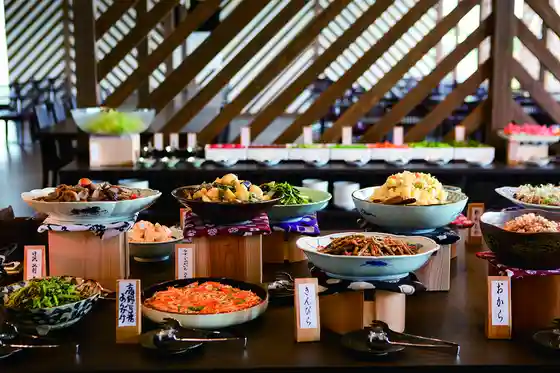
Yasai Resutoran SHONAN
Koryu Yama Fuse Benten Tokai Tera
Teganuma Fisshingu Center (Shisetsu) / Okute Ga Tsurizumu (Experience)
Kombukuro Ike Shizen Hakubutsu Park
Hirohata Hachiman Shrine
Kita Kashiwa Furusato Park
Kashiwa no Ha Park (Aki no Bara Sono) (Kashiwa)
Kashiwa Shonanyume Farm
JA Chiba Tokatsu Antenashoppu daichi
Kyu Tega Kyokai Do
Kyu Yoshida Ie Jutaku Rekishi Park